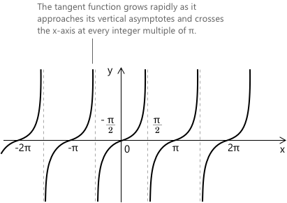

Функція тангенса
Тангенс-функція
Функція тангенса \(f(x) = \tan(x)\) кожному куту \(x\), вираженому в радіанах, присвоює відповідне значення тангенса. Її графік є періолічною кривою з періодом \(\pi\) і має вертикальні асимптоти там, де косинус \(x\) дорівнює нулю, а саме при \(x = \pi/2 + k\pi\) для \(k \in \mathbb{Z}\). Функція \(f(x) = \tan(x)\) має область визначення, що складається з усіх дійсних чисел, за винятком цих точок, а її область значень — усі дійсні числа.

Корисний спосіб читати цей графік — пам'ятати, що тангенс визначається як
\[
\tan(x) = \frac{\sin(x)}{\cos(x)}
\]
Розгляд його як відношення допомагає зрозуміти форму кривої: тангенс змінюється плавно там, де відповідні синус і косинус змінюються плавно, тоді як він стрімко зростає або спадає, коли косинус наближається до нуля, що формує загальний вигляд графіка.
Графік також показує, що поблизу початку координат тангенс-функція поводиться майже як пряма: для малих значень \(x\), \( \tan(x) \) зростає плавно, перш ніж його зростання стає більш вираженим при наближенні до точок розриву.
Властивості
- Область визначення: \( { x \in \mathbb{R} : x \neq \frac{\pi}{2} + k\pi \text{ для всіх } k \in \mathbb{Z} } \)
- Область значень: \( y \in \mathbb{R} \)
- Періодичність: періодична за \( x \) з періодом \( \pi \)
- Парність: непарна, \( \tan(-x) = -\tan(x) \)
- Корені: \(x = \pi n, \qquad n \in \mathbb{Z}\)
- Цілий корінь: \(x = 0\)
Границі, похідні та інтеграли тангенс-функції
Тангенс \( x \) визначається як відношення між синусом і косинусом кута \( x \). \[ \tan(x) = \frac{\sin(x)}{\cos(x)} \]
Корисною границею, яку варто пам'ятати, є: \[ \lim_{x \to 0} \frac{\tan(x)}{x} = 1\] що показує, що поблизу початку координат тангенс поводиться майже як функція \(x\). Поведінка тангенса біля його першої вертикальної асимптоти також добре описується границями. Коли \(x\) наближається до \(\pi/2\) зліва, функція зростає без обмеження: \[ \lim_{x \to \frac{\pi}{2}^-} \tan(x) = +\infty \] При наближенні справа значення, натомість, розбігаються в мінус нескінченність: \[ \lim_{x \to \frac{\pi}{2}^+} \tan(x) = -\infty \]
Функція є неперервною та диференційовною на своїй області визначення. Похідна дорівнює: \[ \frac{d}{dx} \tan(x) = \sec^2(x) \]
Невизначений інтеграл дорівнює: \[ \int \tan(x) dx = -\ln |\cos(x)| + c \]
Вичерпний огляд тригонометричних інтегралів разом із найкориснішими методами перетворення та заміни для обробки складніших випадків доступний на сторінці про інтеграли тригонометричних функцій.
Альтернативна форма функції \( \tan(x) \) з використанням уявних чисел задається формулою Ейлера. Тут \( e^{ix} \) — це показникова функція з основою \( e \), а \( i \) — уявна одиниця: \[ \tan(x) = \frac{e^{ix} – e^{-ix}}{i \left(e^{ix} + e^{-ix}\right)} \]